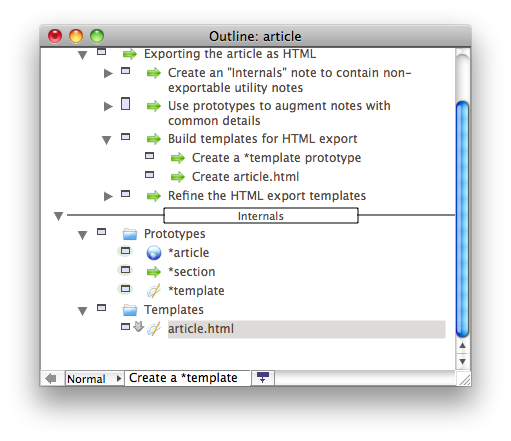

Creating an article in HTML with Tinderbox
For almost 10 years now, I've had an on-again / off-again relationship with Tinderbox from Eastgate Systems Inc. I've long used outlines and mindmaps to get thoughts and out of my head and onto paper and screens. So, it's pretty inevitable that I'd eventually be attracted to Tinderbox.
But, the thing is, Tinderbox is a complex technology. Note that I didn't write application or utility: Tinderbox isn't a sleek little productivity app you can pick up for $20 or less—and if you approach it from that mindset both the price and user interface will baffle you.
No, Tinderbox is more like a hyperdimensional spreadsheet or a personal CouchDB. Tinderbox is a platform for capturing your thoughts and wrapping them in a scaffold of machine intelligence. The learning curve follows a crazy-steep Sigmoid function. But, the complexity is there for a reason. This isn't a commuter vehicle; this is a fully-articulated piece of heavy machinery for your brain.
And, as such, you'll probably require a bit of training before you can get productive. So, apropos of my notion of writing for myself, I thought I might throw together a tutorial on some things that have finally come together for me. If I do this right, it'll be a tutorial I wish I'd had a few years ago.
Table of Contents
Writing an article in Tinderbox
This will be a tutorial about writing an article with Tinderbox for publication as HTML. In fact, this tutorial written using Tinderbox, so it'll serve as its own example. You're reading the HTML export now, and the complete source documents can be found here on GitHub.
I'll build things up incrementally throughout the tutorial, documenting something close to the actual process I went through along the way. Following along with the final product may help you—though building your own may help more.
Outline the article's sections
The first thing to do is to create a new document, which opens up as an Outline View by default. Hit return to create your first note, and type the title "Creating an HTML5 Article with Tinderbox":
Now, if you hit Shift-Return, you'll create a child note under the first one. Type the title of your second note, "Outline your article's sections". After that, hit Return, and you can start typing the title of the next note. Your outline is now well under way:

This is basic outlining, one of the simpler features of Tinderbox and many productivity applications. Continue like this, sketching out the structure of what you plan to write. You can drag notes around to rearrange them, delete them, do whatever you like with the outline. Note that Tinderbox offers many further tools for capturing and visualizing your thoughts, but we'll stick with the Outline View for now.
Write the article's text in notes
Once you've got an outline for your article in good shape, it's time to start writing the text of the article itself. Really, you can bounce back and forth between outlining and writing prose—Tinderbox doesn't impose a process—but this is a good time to introduce the latter.
In Tinderbox, notes have many attributes. So far, you've seen the Name attribute used as the titles of outline nodes. Well, notes can also contain body text. To see what I mean, click on a note to select it—say the root note of your outline—and hit the spacebar. Here's what the body text looks like for the root node of this tutorial:

You can click on any note in the outline and call up a text editor with the spacebar. By using this editor, you can work on writing the actual content of your article.
But, clicking on each note and hitting the spacebar can get tedious after awhile. Tinderbox offers another View to make editing easier across a complex document. Select View > New Explorer View from the menu, and you'll see something like this window:

The Explorer View is a split window combining both a text editor with another view type. By default, this will show your outline. Here, you can click on the title of a note, and its text appears in the editor. This should make it easier to jump back and forth between sections, and even perform some tweaks to the outline itself.
One of the main drawbacks of using the Explorer View, though, is that it's difficult to compare the text of two notes side-by-side. However, Tinderbox lets you easily switch between multiple views on the same document, so nothing keeps you from using whatever tool makes sense from moment to moment.
Using prototypes to augment notes
Spreadsheets and relational databases center around rows and columns. Similarly, Tinderbox centers around notes and attributes. For the most part, the attributes of your notes have been invisible, since you've been dealing mainly with names and body text. But, you're about to get a bit more acquainted with what goes on under the hood of your notes.
In Tinderbox, you can create a special kind of note called a prototype. A prototype, as its name suggests, can serve as the basis for many other notes. You can create a prototype and assign values to its attributes, and those values will be used as defaults for other notes using that prototype. Furthermore, if you change an attribute on a prototype, other notes using the prototype will inherit the changes to their defaults.
Now, say you're done composing the content of your article. You've gotten the outline structured to your satisfaction, and let's say you've written everything you want for a first draft. It's time to begin preparing the document for the production of an HTML page.
Creating an "Internals" note to contain utility notes
First, in order to keep things clean, you're going to create a new note to contain the export machinery you'll soon need.
Select the root note of your article. But, rather than just hitting return to create a new outline item, hit Cmd-K to summon the full Create Note dialog window:
In this dialog, you can control quite a number of different attributes and options. But, ignore most of them for now. Just type the name "Internals" and, for good measure, check the "Separator" box. This will create a new note like the following:
Checking "Separator" served both to sneak in a new example of a Tinderbox feature, as well as to make this special new container stand apart from the article content. I prefer doing this to help make a clear distinction between the content I'm working on and the notes I accumulate to help process that content.
Also, notice I got a little ahead of things in the screenshot above: Two additional notes should be added as children to "Internals", respectively named "Prototypes" and "Templates". These will serve as containers for further resources created throughout the tutorial.
Creating the *article prototype
Next, to further explore prototypes, create a child note named "*article" under the Prototypes note in Internals. Why the name *article? No technical reason, really; name it whatever you like. I prefer to use peculiar names for notes that have special purposes—not unlike using the separator style for the Internals container.
Now, either right-click and select Rename from the context menu, or hit Enter. (That's Enter, mind you, not Return. On my MacBook Pro, this is Fn-Return.) This will summon up the note details dialog, not unlike the one used to create the Internals note earlier:

In this dialog, check the box next to "Can be a prototype" and click Ok. This note is now a prototype.
Next, to use the new prototype, select the root note of your article and summon the note dialog with either the right-click menu or the Enter key:
Notice the drop down selection for Prototype. In this list, you should see the name of your new prototype *article—select it and hit Ok. Now, your root article note is an instance of the prototype *article.
Using badges in outlines with prototypes
To demonstrate how prototype inheritance works, I'll introduce another interesting feature of Tinderbox outlines called badges.
Just to the left of the note title for *article, there should be a bit of empty space. Right-click here, and you should see a list of icons like these:

Pick one of these—I used "web", myself—and you should notice that not only does the prototype now have an icon next to it, so does the root note of your article:

This works because the badge you picked is assigned by Tinderbox to the Badge attribute of the *article prototype. And, since your article's root node is an instance of the *article prototype, it received the same value for its Badge attribute as well.
Creating the *section prototype
The next prototype to create should be named "*section". This one will be used for all the sections and sub-sections in your article. Create it in the same way you created *article—that is: create the note, summon the note details dialog, ensure "Can be a prototype" is checked.
After you've created a *section prototype, give it a badge. I used "arrow right" in my document:

I've also given a "folder" badge to some other container notes: These are purely ornamental, helping keep track visually of the purposes that various notes serve. Now, select your article's root note, select View > Expand All to reveal all sections. Select all of these sections, by clicking the first and then clicking the last in the list while holding shift. The selection should look like this:
Once you've got sections selected, it's time for another interesting tool in the Tinderbox, called Quickstamp. Either hit Cmd-1 or pick Window > Inspector from the menu. You'll see a dialog like this one:

With this dialog, you can quickly assign a value for a given attribute onto many notes at once. Select the "General" category from the first drop down, and then "Prototype" from the second. Type "*section" into the Value field, and click Apply.
Almost instantly, you should see the badge from your *section prototype appear on all the sections you've selected in your outline:

As the spread of the decorative badge demonstrates, the prototype inheritance mechanism has propagated the badge change to all notes using *section as a prototype. This will come in handy beyond badges before the tutorial is done.
Using an OnAdd rule to auto-create *section notes
There's one more way to apply a prototype that's worth showing here. You've applied a prototype to a single note, and then used Quickstamp to apply a prototype to many notes. But, those are manual processes—wouldn't it be nice if you could get a prototype automatically applied to certain notes when you create them?
As it turns out, this something the "OnAdd Action" field in the note details dialog can do. Open up the details for the *article prototype, and type in the following OnAdd Action field:
if ($Prototype="") { $Prototype="*section" }
The dialog should look like this before you hit Ok:

Repeat this process with the *section prototype.
What should happen in your document now is that whenever you add a new note to your document under notes using the *article or *section prototype, that new child will be assigned to the *section prototype—unless it already has a prototype (eg. having been dragged in from elsewhere, or having been given a prototype by other means).
This is pretty powerful: It means that you can set up outline container notes that establish defaults over their contents without requiring manual work beyond creating children.
Exporting the article as HTML
First, you used Tinderbox as an outliner to rough out an article. Then, you used it as a word processor, writing content on top of your outline. After that, you augmented notes with prototypes describing their respective intents (ie. *article vs *section) and assigning common default attributes.
This is the point where Tinderbox starts to shine: Through the use of notes, attributes, and prototypes, you can begin building automated processing and intelligence around your content.
As far as the scope of this tutorial goes, though, we'll limit things to producing an HTML page from your document. To facilitate this, Tinderbox offers powerful templating and export capabilities that can be highly customized via the same tools you use to capture thoughts and create content. Most of the features you've seen up to this point in the tutorial will be used again to build an HTML page from your article outline and text.
Creating a *template prototype
HTML export can be accomplished in Tinderbox though the use of export templates. If you're a web developer, you're probably already be familiar with the concept. If not, maybe think of templates as akin to mail merge in word processors: A single example of output applied to many instances of structured data.
Export templates in Tinderbox can be files on disk, or taken from the text of notes in your document. They're built using a set of codes that allow you to reference notes, output attribute values, and construct enough logic to satisfy most export needs.
For this tutorial, we'll use notes for templates. So, the next step is to create a prototype named "*template" under your Internals note, like so:
Ensure that both the "Can be a prototype" and "Can be a template" checkboxes are checked in the note details dialog. In my document, I also gave the *template prototype a "design" badge, so as to make them easily identifiable in outlines.
Creating the article.html template
Alongside the Prototypes note under Internals, we also created a Templates container note. Within this note, create a new one named "article.html" using *template as a prototype. Your outline should now look like this:

Edit the text of your new article.html note, pasting in the following code:
<!DOCTYPE html>
<html>
<head>
<meta http-equiv="Content-Type" content="text/html; charset=UTF-8" />
<title>^title^</title>
</head>
<body>
<article>
<h1>^title^</h1>
^value($Text)^
^justChildren^
</article>
</body>
</html>
Giving a full explanation of the export codes available for use in templates is beyond the scope of this tutorial, but hopefully you can make sense of most of it. It's HTML, with a few codes sprinkled in to pull content from an article note. You can add CSS and JavaScript includes if you like, and customize the markup however you like.
One of the most interesting parts of this template, though, is the ^justChildren^ code: This code causes the export process to recurse into child notes in the outline, including the output of their export templates at this spot in the parent note outline.
So, this article.html template provides the overall shell for the HTML page, including both content from the root note of the article and all its sections.
Using the article.html template
Now that you've got a template for use in exporting an article, it's time to use it. This is a natural match for the *article prototype you created earlier. To pair the two together, first select the *article prototype note and then choose View > New HTML View from the menu. You should see something like this:
Within that view dialog, there's a drop down selector for the Template field. Listed in that selector should be your new article.html template, so choose it. This will set this template as the default for any HTML export of any note using *article as its prototype. For the current document, that's just one article, but it could apply to many thanks to the prototype inheritance mechanism.
Additionally, ensure that the "Export" and "Markup text" checkboxes are checked in this dialog. This will ensure the article is exported, and that the plain text content of these notes will be automatically wrapped in HTML tags according to some rules built into Tinderbox.
Note that the "Export children" checkbox is unchecked: This is because article.html uses the ^justChildren^ code to include exported children within the same HTML file, whereas "Export children" will cause the export process to produce separate files for all child notes. Doing both could be useful in, for example, blogs with index pages and individual entry pages displaying the same content.
You should feel free to play with these settings to get a sense for what they do—their results should appear in the HTML View as a preview whenever you click the "Update" button. You can also use the "Preview" button to open the HTML in a browser of your choice, configured for the document. (To choose a browser, try Edit > Document Preferences > HTML from the menu bar.)
Creating and using the section.html template
Just as you did for article.html, create a new note under Internals / Templates, giving it a prototype of *template. Edit its text and paste in the following code:
<section>
<h^value($OutlineDepth)^>^title^</h^value($OutlineDepth)^>
^value($Text)^
^justChildren^
</section>
This looks much like the article.html template, though it introduces the attribute OutlineDepth. You can consult a full list of note attributes, but this particular attribute is useful for determining the depth of a section within the outline. This allows you to programmatically produce section title elements progressing from <h1> to <h6> and beyond, depending on how deeply nested a subsection is within the article.
And as you did for *article, open a new HTML View on the *section prototype and select the section.html template to pair the two, like so:
The impact of doing this for the *section prototype is more wide-ranging than for the *article prototype: Since *section is applied to most of the notes in the outline, pairing the section.html template to *section causes that template to also be paired to every section in the article.
So, thanks to ^justChildren^ and the use of prototypes, the article.html and section.html templates will be used to recursively export the content from all notes in your article as HTML.
Preview and perform an HTML export
If you select the root note of your article and open an HTML View, you should now be able to see a preview of the full HTML page that will be exported using the templates you just created and paired with prototypes:
From the HTML View, you can also set a file name, extension, and destination folder for file output of the HTML export. Hitting the "Export" button will produce the desired file on disk.
Additionally, once these attributes have been set, they'll be used as defaults in the future. This comes in handy for use with the File > Export as HTML... menu item, which will perform HTML export on all notes without the need to open a new HTML View for each one individually. This doesn't matter as much for the present document, since there's only one article, but you can produce a collection of articles or even an entire website in this manner with just a single Tinderbox document.
Refining the document and export process
At this point, we're pretty much done. You got an article outlined and written, augmented it with prototypes, and set up HTML export templates. You can continue to edit the content and produce an HTML page whenever you like.
But, there are a couple of rough edges left, plus a few bonus features I can throw in. This, by the way, is one of the dangers I've found in using Tinderbox: resisting the temptation to constantly tweak and refine documents, rather than doing the work I built the documents for in the first place.
Restricting which notes get exported
If you tried the File > Export as HTML menu item, you may have noticed some extra files and folders beyond the article itself appearing in your export folder. (If you haven't tried it, you might want to do so now to follow along.)
This is because all notes have an attribute HTMLDontExport with a default value of false. This means that when the Export as HTML command scans through the entire document, all notes are exported except those with an HTMLDontExport attribute set to true. This attribute can be managed by the Quickstamp dialog, is also managed by the HTML View (eg. the Export checkbox), and via the Note > Get Info menu item.
There's also an attribute called HTMLExportChildren, which corresponds to the "Export children" checkbox in an HTML View. This acts like the inverse of HTMLDontExport, only applied to all the contents of a note.
In particular, the Internals note and all of its children are not worth exporting to HTML. So, to exclude it from the process, select the note and open a new HTML View. Ensure that the "Export" and "Export children" checkboxes are unchecked.
If you try another Export as HTML command to an empty folder, you should notice that the extra files and folders not related to your article's page are no longer generated by Tinderbox.
Filtering exported text through Markdown
Throughout this tutorial, you also may have noticed that I'm using the Markdown syntax in my article text. If you tried to do the same, you may have wondered why your HTML exports didn't seem to support this formatting scheme.
As it turns out, Markdown is not built into Tinderbox. Instead, export codes offer a tool you can use during to filter text through external shell commands. As the creator of Tinderbox explains in a blog posting, this means that you can cause Tinderbox to execute Markdown.pl as a text filter during the HTML export process.
To do this, you'll first need to download the Markdown script. I did so, and copied Markdown.pl to /usr/local/bin on my Mac.
Next, edit the source of your article.html and section.html templates. Look for these lines:
^value($Text)^
Replace these expressions with the following template code:
^value(runCommand("perl /usr/local/bin/Markdown.pl",$Text))^
If you placed the Markdown.pl script in a directory other than /usr/local/bin, be sure to adjust the file path in runCommand().
Here, the runCommand() operator does the work of executing Markdown.pl with your note's text as input. The output will be included in the HTML export.
Building anchors for within-page links
For a long document like this tutorial, including anchors within the page is useful for supporting links to specific parts from other referring pages or for building a table of contents. And, the important thing about creating page anchors is that each is given a unique identifier.
By default, though, a note in Tinderbox does not have unique a identifier accessible by attribute from which to build a page anchor. However, you can create one yourself by setting up a new attribute that implements an auto-incrementing index.
Creating a new auto-incrementing attribute
You see, as mentioned earlier, Tinderbox is about notes and attributes like relational databases are about rows and columns. And, like a database, Tinderbox maintains a schema describing all possible attributes for notes in a document. Each of these attributes has a name, a data type, and a default value.
The set of attributes provided out of the box quite long, and it covers a lot of capabilities for notes. However, the built-in attributes are not always sufficient. With this in mind, Tinderbox offers the ability to change the default values of existing attributes, or to add your own new attributes to the list. It's the latter we're interested in here for the construction of page anchors.
You can summon the Attributes dialog via Window > Attributes in the menu, or via keyboard with Cmd-2. The Attributes dialog is small, but it's very powerful: Whereas notes can inherit default attribute values from a selected prototype, changes made in the Attributes dialog window affect all notes throughout the document. The Attributes dialog looks like this:
If you click the "Create..." button, you'll see another dialog like this one:
To create a new auto-incrementing attribute with this dialog, do the following:
- enter a name of "id";
- select a type of "number";
- check the "sequential" box;
- enter a default value of "0";
- click OK.
You should now see the new user-created attribute id listed under the User tab of the Attribute dialog.
What you didn't see is, though, is this: Upon creation of the id attribute, all notes in the document were automatically assigned sequential numeric values for the attribute. And, in the future, all new notes will be given the next sequential number for id, not unlike an auto-increment column in a database. Any notes you duplicate or copy/paste will also receive a new sequential number for this field, thus making it a reliable choice as unique identifier for notes.
Using the new attribute in templates
Now that you've got a reliable unique identifier for all notes in an attribute, using it in an export template is very simple. In fact, here's a revised version of the section.html template you can use to start generating page anchors and links in the section headers:
<section id="section-^value($id)^">
<h^value($OutlineDepth)^>
<a href="#section-^value($id)^">^title^</a>
</h^value($OutlineDepth)^>
^value($Text)^
^justChildren^
</section>
The changes here add a new id attribute to the <section> element, and an <a> link within the section header whose href URL points to the respective section. If you hover over the headings of this tutorial, you should notice that this template is in use here and every heading is also a link you can copy or bookmark for later reference within the tutorial.
Summary
In this tutorial, I walked you through the following in using Tinderbox:
- outlining an article;
- writing an article;
- augmenting an outline with prototypes;
- building and using HTML export templates.
I hope that the end product from this tutorial turns out to be a useful tool for producing content for publishing on the web using Tinderbox.
The nice thing about the Tinderbox document constructed during the course of this tutorial is that you don't need to start from scratch the next time you want to write an article: Just clear out the article and section content from the previous use, and use the prototypes and templates as a starting point for your next article.
Along the way, as you learn more features of Tinderbox, you can continue to introduce incremental improvements—please share, especially if I can include them in a future revision of this tutorial!